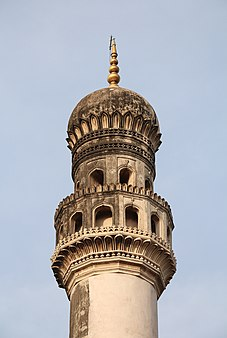
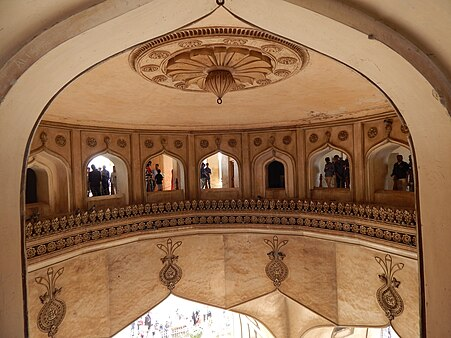

Our Charminar
Charminar was built by Sultan Mohammed Quli Qutb Shah in 1591.

Night View

Minaret Of Charminar

Hyderabad is the largest city and capital of the state of Telangana.It is also known as city of pearls or city of Nizams.
Charminar is one of the oldest monuments in India, and it is situated in Hyderabad, Telangana. Charminar was built in 1591 and is a symbol of Hyderabad. This monument is the official emblem of Telangana. Charminar is derived from Urdu, meaning 'Four Pillars.
Golconda was the principal capital of the Qutub Shahi kings. The inner fort contains ruins of palaces, mosques and a hill top pavilion, which rises about 130 meters high and gives a bird's eye view of other buildings. Golconda fort is undoubtedly one of most magnificent fortress complexes in India.
Deemed as one of most expensive gardens in India, the NTR Garden is a popular attraction of the city of Hyderabad. Sprawling across an area of 55 acres, it houses the memorial of the great leader of Andhra Pradesh, Late N T Rama Rao.
Charminar was built by Sultan Mohammed Quli Qutb Shah in 1591.
Charminar
The four pillars around Charminar represent the four caliphs.
Charminar was built by Muhammad Quli Qutb Shah, the fifth ruler of the Qutb Shahi dynasty. After shifting his capital from Golkonda to Hyderabad in 1591, he constructed this monument. Charminar is located at the center of the Old City. It is 426 years old !! It was built to celebrate the elimination of the Plague.
It is a square-shaped structure with four arches and huge doorways that open into the four streets. The square-shaped middle structure measures up to 20 meters high and the four minarets are 56 meters high and are of Indo-Islamic architecture style, incorporating Persian architectural elements.
Charminar is the pride of Hyderabad. The Charminar lies at the center of the city for a good reason. The city was later planned on a grid pattern, around the Charminar, with two main roads that connect the markets of Golkonda with the port city of Machilipatnam intersecting and running North-south and east-west. It is the first multi-storied building in Hyderabad.
Charminar has been synonymous with the culture of Hyderabad standing tall as a reminder of the glorious days of the past era.
This historic landmark in the heart of Hyderabad's old city is well worth the time to climb the circular staircase to survey the markets and mosque below you from the top.
Went to Charminar in the night, as wanted to see the monument in the lights. Also there was less crowd during night, so could spend sometime admiring the view, as during daytime the road around the monument is filled with traffic.